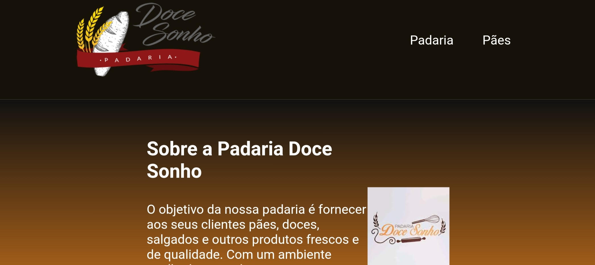
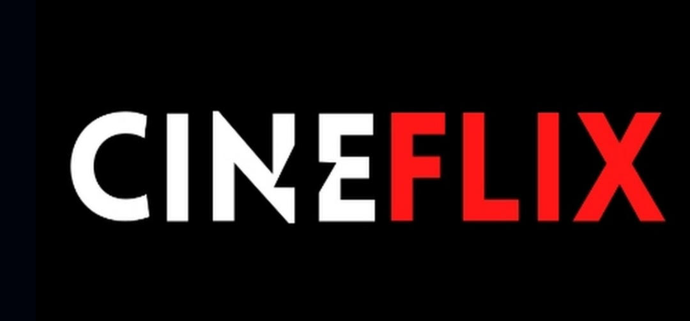
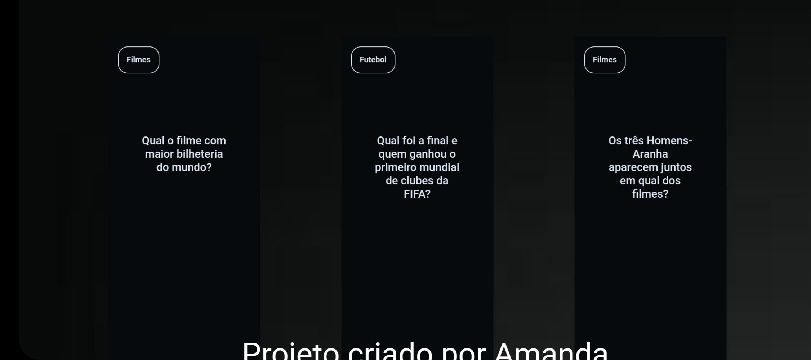

Meus projetos

Padaria Doce Sonho
Este projeto é uma página web que apresenta uma lista dos tipos de pães que são vendidos, incluindo informações sobre a padaria, fotos para ilustrar o tipo de pães que a padaria oferece. A página é estilizada com CSS para uma boa visualização.

CineFlix: site de filmes e séries
Este projeto é um site para assinar filmes e séries, com aplicativo e informações sobre todo o entretenimento, ele faz com que você tenha seu cinema em casa.

FlashCards: Jogo Interativo
Este projeto de cards cria um jogo interativo de perguntas e respostas sobre futebol e filme, oque permite os usuários ter novas informações sobre esses assuntos de uma forma dinâmica.